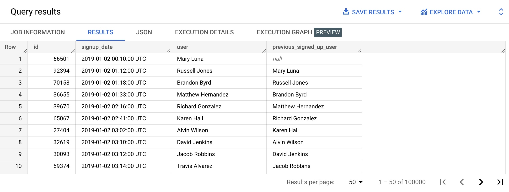
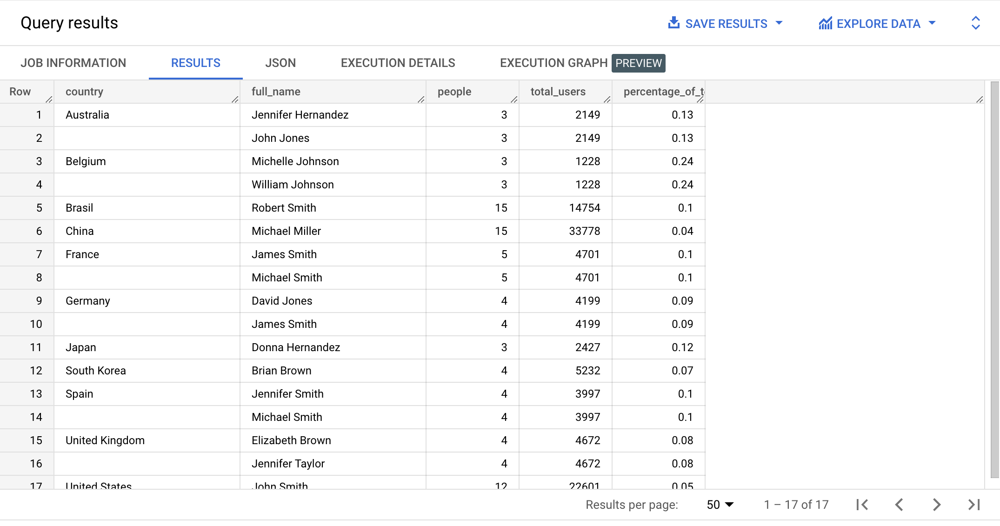
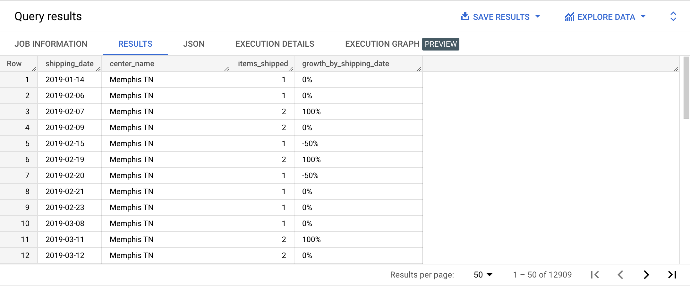

LAG allows us to display values from previous rows. It takes up to 3 parameters:
SELECT id,
created_at AS signup_date,
CONCAT(first_name, ' ', last_name) AS user,
LAG(CONCAT(first_name, ' ', last_name)) OVER(ORDER BY created_at ASC) AS previous_signed_up_user
FROM bigquery-public-data.thelook_ecommerce.users
ORDER BY signup_date ASC;

👉 Check out the official documentation
{% include practice_problems_intructions.html %}Resulting table from previous practice problem (Most popular full names by country)
Write a query that will display the table from the previous practice problem (Most popular full names by country) in such a way that that each country value only appears once.

bigquery-public-data.thelook_ecommerce.orders
bigquery-public-data.thelook_ecommerce.order_items
Write a query that will display the average difference in order value for repeat customers, between the first and the second order.
| avg_difference |
|---|
| -0.88 |
WITH repeat_customers AS
( SELECT user_id,
COUNT(*) AS order_count
FROM bigquery-public-data.thelook_ecommerce.orders
GROUP BY user_id
HAVING order_count > 1
),
orders_with_values AS
( SELECT user_id,
created_at AS order_date,
order_id,
SUM(sale_price) AS order_value
FROM bigquery-public-data.thelook_ecommerce.order_items
GROUP BY user_id, created_at, order_id
),
row_numbered_orders_with_values AS
( SELECT user_id,
order_date,
order_id,
order_value,
ROW_NUMBER() OVER(PARTITION BY user_id ORDER BY order_date ASC) AS row_num
FROM orders_with_values
),
differences_by_repeat_users AS
( SELECT r1.user_id,
order_value - LAG(order_value) OVER(PARTITION BY r1.user_id ORDER BY row_num ASC) AS difference
FROM row_numbered_orders_with_values AS r1
INNER JOIN repeat_customers AS r2
ON r1.user_id = r2.user_id
WHERE row_num IN (1,2)
)
SELECT ROUND(AVG(difference), 2) AS avg_difference
FROM differences_by_repeat_users;
bigquery-public-data.thelook_ecommerce.orders
bigquery-public-data.thelook_ecommerce.order_items
| next_day_repeat_customers |
|---|
| 4138 |
CREATE TEMP FUNCTION check_consecutive_order(first_timestamp TIMESTAMP, previous_timestamp TIMESTAMP)
RETURNS BOOL AS
(
(SELECT (DATE_DIFF(CAST(first_timestamp AS DATE), CAST(previous_timestamp AS DATE), DAY) = 1))
);
WITH repeat_customers AS
( SELECT user_id,
COUNT(*) AS order_count
FROM bigquery-public-data.thelook_ecommerce.orders
WHERE FORMAT_DATE('%Y', created_at) = '2022'
GROUP BY user_id
HAVING order_count > 1
),
repeat_customers_orders AS
( SELECT r.user_id AS user_id,
o.order_id AS order_id,
o.created_at AS order_timestamp
FROM repeat_customers AS r
INNER JOIN (SELECT user_id, order_id, created_at FROM bigquery-public-data.thelook_ecommerce.order_items) AS o
ON r.user_id = o.user_id
AND FORMAT_DATE('%Y', o.created_at) = '2022'
GROUP BY user_id, order_id, order_timestamp
ORDER BY user_id ASC, order_timestamp ASC
),
days_between_repeat_customers_orders AS
( SELECT user_id,
order_id,
order_timestamp,
check_consecutive_order(order_timestamp, LAG(order_timestamp) OVER(PARTITION BY user_id ORDER BY order_timestamp ASC))
AS is_consecutive_order
FROM repeat_customers_orders
)
SELECT COUNT(DISTINCT user_id) AS next_day_repeat_customers
FROM days_between_repeat_customers_orders
WHERE is_consecutive_order = TRUE;
bigquery-public-data.thelook_ecommerce.orders
bigquery-public-data.thelook_ecommerce.order_items
Write a query that will display the average difference in order value for repeat customers, between the last order and the order just before the last.
| avg_difference |
|---|
| -0.04 |
WITH repeat_customers AS
( SELECT user_id,
COUNT(*) AS order_count
FROM bigquery-public-data.thelook_ecommerce.orders
GROUP BY user_id
HAVING order_count > 1
),
orders_with_values AS
( SELECT user_id,
created_at AS order_date,
order_id,
SUM(sale_price) AS order_value
FROM bigquery-public-data.thelook_ecommerce.order_items
GROUP BY user_id, created_at, order_id
),
row_numbered_orders_with_values AS
( SELECT user_id,
order_date,
order_id,
order_value,
ROW_NUMBER() OVER(PARTITION BY user_id ORDER BY order_date DESC) AS row_num
FROM orders_with_values
),
differences_by_repeat_users AS
( SELECT r1.user_id,
order_value - LAG(order_value) OVER(PARTITION BY r1.user_id ORDER BY row_num ASC) AS difference
FROM row_numbered_orders_with_values AS r1
INNER JOIN repeat_customers AS r2
ON r1.user_id = r2.user_id
WHERE row_num IN (1,2)
)
SELECT ROUND(AVG(difference), 2) AS avg_difference
FROM differences_by_repeat_users;
bigquery-public-data.thelook_ecommerce.distribution_centers
bigquery-public-data.thelook_ecommerce.inventory_items
bigquery-public-data.thelook_ecommerce.order_items

WITH items_shipped_by_center AS
( SELECT CAST(o.shipped_at AS DATE) AS shipping_date,
d.id AS center_id,
d.name AS center_name,
COUNT(*) AS items_shipped
FROM bigquery-public-data.thelook_ecommerce.distribution_centers AS d
INNER JOIN bigquery-public-data.thelook_ecommerce.inventory_items AS i
ON d.id = i.product_distribution_center_id
INNER JOIN bigquery-public-data.thelook_ecommerce.order_items AS o
ON i.id = o.inventory_item_id
AND o.shipped_at IS NOT NULL
WHERE EXTRACT(YEAR FROM o.shipped_at) = 2022
AND EXTRACT(MONTH FROM o.shipped_at) = 12
GROUP BY shipping_date, center_id, center_name
),
growth_by_shipping_dates AS
( SELECT *,
(SAFE_DIVIDE(CAST((items_shipped - (LAG(items_shipped) OVER(PARTITION BY center_id ORDER BY shipping_date ASC))) AS FLOAT64),
CAST(((LAG(items_shipped) OVER(PARTITION BY center_id ORDER BY shipping_date ASC))) AS FLOAT64)) * 100)
AS growth_by_shipping_date
FROM items_shipped_by_center
),
formatted_growth_by_shipping_dates AS
( SELECT shipping_date,
center_id,
center_name,
items_shipped,
CONCAT(CAST(COALESCE(growth_by_shipping_date, 0) AS INTEGER), '%') AS growth_by_shipping_date
FROM growth_by_shipping_dates
)
SELECT shipping_date, center_name, items_shipped, growth_by_shipping_date
FROM formatted_growth_by_shipping_dates
ORDER BY center_id ASC, shipping_date ASC;